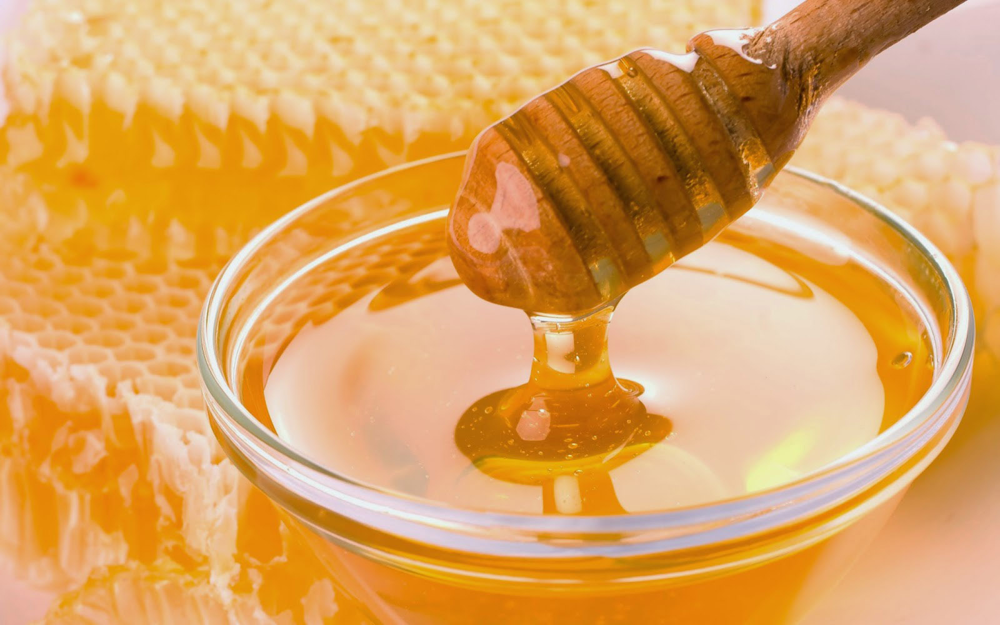
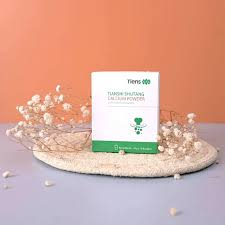
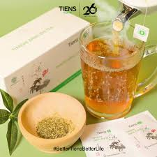

Deskripsi: SUSU DENGAN KANDUNGAN KALSIUM TERBANYAK DAN AMPUH MENYERAP 90% LEBIH CEPAT. DIPERCAYA OLEH PARA AHLI GIZI SEBAGAI SUPLEMEN KALSIUM TERBAIK DI DUNIA.
Fungsi Kalsium NCP yaitu sbb:
Memenuhi kebutuhan kalsium tubuh mempertahankan kesehatan tulang, mengatur kontraksi dan relaksasi otot, mengatur kesehatan sel-sel tubuh, meningkatkan imunitas dan menambah tinggi badan usia dibawah 30 tahun
Spirulina
Harga: Rp.349.000
Deskripsi: Siapa yang tidak mengenal dengan sepuh yang satu ini. Di dunia medis spirulina merupakan sepuh utama yang diincar baik untuk masalah kesehatan maupun kecantikan. Karena dengan berbagai keunggulan spirulina tersebut. kini hadir spirulina organik dalam bentuk kapsul agar mudah dimodifikasi sesuai kebutuhan si pengguna. Dengan pengolahan teknologi modern, Spirulina kapsul ini mampu menjaga keterjaminan dan kualitas produknya hingga ke tangan konsumen. Berikut beberapa keunggulan spirulina tiens:
Bahannya alami organik
100% spirulina ORIGINAL ALAMI tanpa campuran bahan lainnya
Bisa dikonsumsi secara langsung
Aman dikonsumsi oleh dewasa,remaja,anak-anak,dan lansia
mengandung 1000 manfaat didalamnya termasuk dalam hal kecantikan
Telah melewati seleksi ketat dari BPOM dan MUI sebagai produk aman dan halal untuk dikonsumsi
Masker spirulina telah mendapatkan sertifikasi BPOM dan halal MUI, sehingga aman untuk digunakan pada kulit muka, bahkan sangat baik untuk dikonsumsi sebagai pelengkap nutrisi tubuh.
ZINC
Harga: Rp.160.000
Deskripsi: Meningkatkan kekebalan tubuh/imun tubuh secara alami, menormalkan berat badan ideal, dll
POM SL. 112 300 711
Tianshi Zinc capsules mengandung bubuk kuning telur 90 mg dan zink laktat 4 mg yang dapat membantu memenuhi kebutuhan zinc.
isi:0,2g x 60 kapsul
Anjuran penggunaan:
2 kali sehari,diminum dengan air hangat. Umur 3-10 tahun:tiap kali 2 kapsul.Diatas 10 tahun : tiap kali 4 kapsul
Vitaline
Harga: Rp.360.000
Deskripsi: Paket pemutih / pencerah Original VITALINE SOFTGEL 30 kapsul

MADU
Harga:
Deskripsi: Makanan dan suplemen seribu manfaat. Berfungsi untuk meningkatkan imun tubuh,pembentukan sel darah merah,dan sangat bermanfaat untuk pertumbuhan dan perkembangan kulit,tulang,dan otot.
POM SL. 112 300 711
100% madu alami tanpa pemanis buatan.
isi:0,2g x 60 kapsul
Anjuran penggunaan:
konsumsi sesuai yang kebutuhan masing-masing individu

Shutang Calcium Powder
Harga: Rp.334.000
Deskripsi: Shutang Calcium Powder merupakan susu kalsium cocok untuk penderita diabetes karena mengandung sedikit lemak dan rendah gula.

JIANG ZHI TEA
Harga: Rp.160.000
Deskripsi: Teh Jiang Zhi Tea merupakan teh resep rahasia kerajaan tiongkok kuno yang dipercaya untuk menjaga dan merawat kecantikan keluarga kerajaan. Teh ini memiliki banyak sekali manfaat yaitu sbb:
Menurunkan kadar kolestrol dalam darah
Merontok dan meluruhkan lemak
kaya antioksidan yang sangat bagus untuk pelindung kulit dan tubuh dari sinar radiasi
Mencerahkan kulit dan membuat kulit tampak lebih muda
sebagai pelangsing herbal alami yang aman dikonsumsi jangka panjang tanpa khawatir efek samping
DLL
POM SL. 112 300 711
Teh jiang zhi tea dengan kandungan rempah-rempah herbal kerajaan tiongkok kuno yang mampu menjaga dan merawat kecantikan dan kesehatan keluarga kerajaan
isi:0,2g x 60 kapsul
Anjuran penggunaan:
2 kali sehari,diminum dengan air hangat. Umur 3-10 tahun:tiap kali 2 kapsul.Diatas 10 tahun : tiap kali 4 kapsul